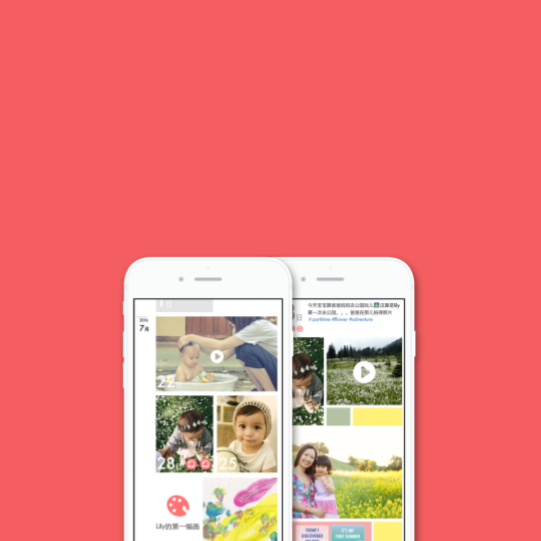
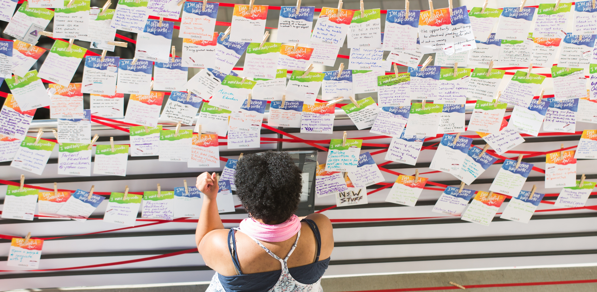
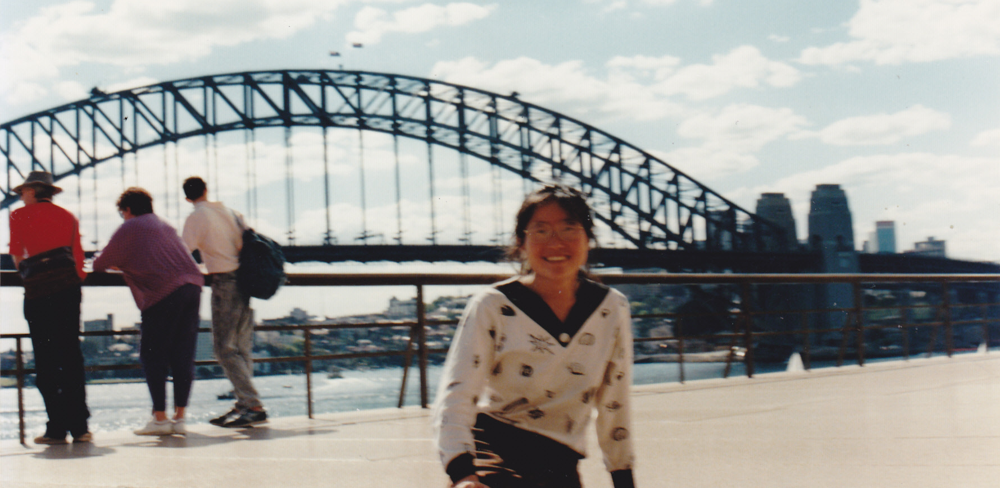
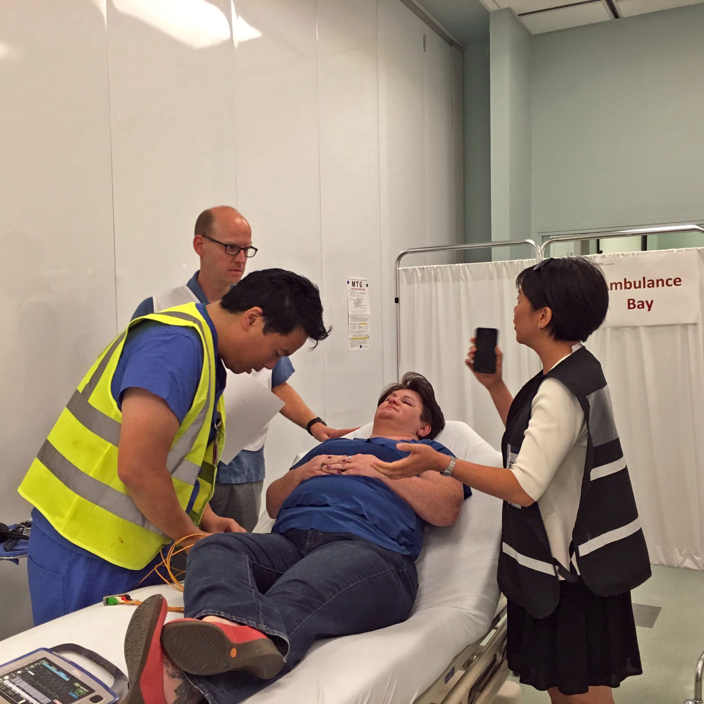
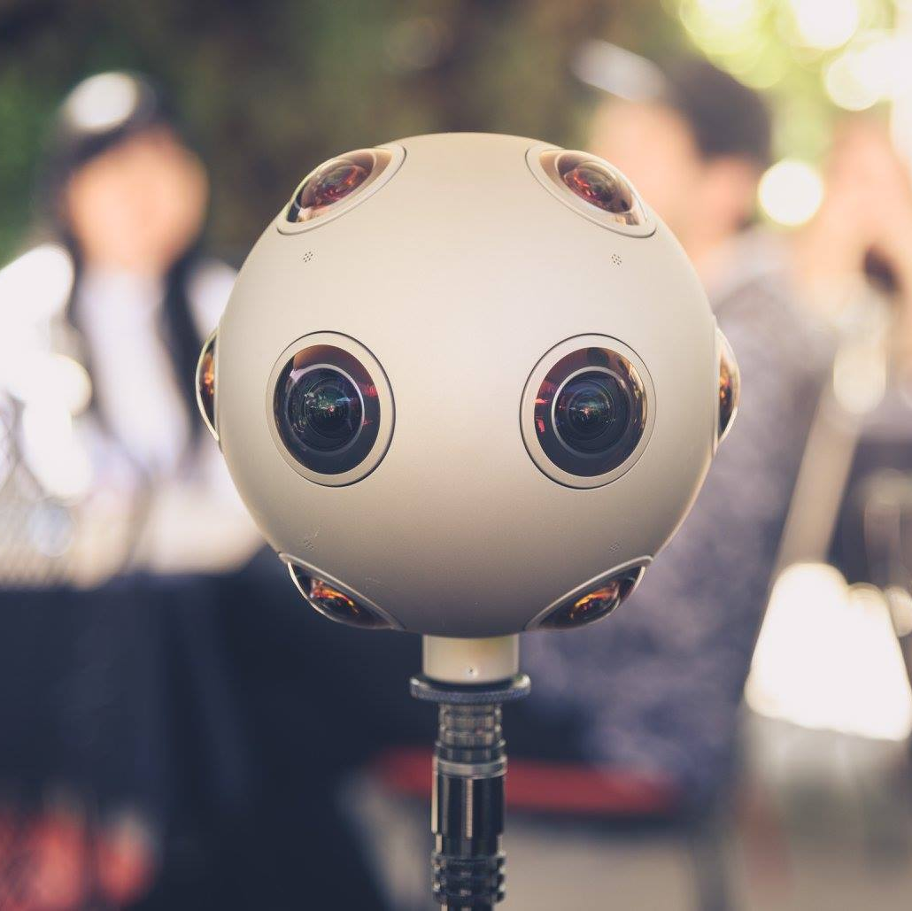

I am a qualitative design researcher with a diverse storytelling tool-kit—based in San Francisco, CA. Check out some of my projects ▼. More about me here.
::previously
Stanford School of Medicine
IDEO CoLab
Peaches newborn and maternal health
:::App Concept

Community soundings wall
:::Experience

Depression: 1,2,3a radio story
:::Storytelling

Stroke tracker project
:::Design Research

Storytelling for 360° worlds
:::Opinion

Where's the beef?a film in 360° 1,2,3a radio story